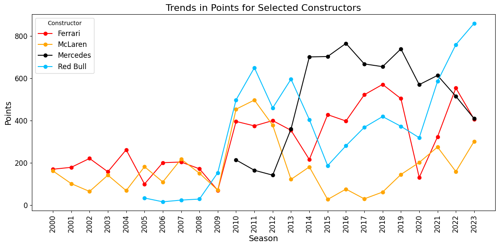

Report
Introduction
Formula 1 (F1) is a sport that combine cutting-edge technology, strategic decision-making, and driver skill to create a dynamic and competitive environment. Every race involves millions of data points – ranging from tire temperatures to lap times – that influence the outcomes. This project aims to explore how data can be utilized to uncover hidden insights into team and driver performance, pit stop strategies, and race dynamics. The goal is to simplify complex analysis into actionable findings that highlight the factors driving success in F1 racing.
Objective
The project aims to answer key questions about race performance and strategies:
- How does a driver’s performance evolve when they switch teams, and what role do constructors play in shaping their success?
- Can patterns or trends in pit stop data reveal insights into team strategies and race outcomes?
- Can data-driven models predict race outcomes, such as point finishes, podium placements, or race wins, based on race and pit stop data?
- What influence do pit stop duration, frequency, and timing have on overall race success for drivers and teams?
- Are certain circuit types, like high-speed tracks or technical layouts, better suited to specific constructors?
Key Findings
- Impact of Team Performance on Driver’s Success


A significant portion of the total championship points for most drivers has been earned while driving for top-performing teams such as Ferrari, Red Bull, and Mercedes. This highlights the crucial role that team performance plays in a driver’s success. A clear correlation is observed between the points scored in a season and the team a driver represents, emphasizing the importance of car performance, engineering excellence, and team strategy.
Analyzing the career trajectories of drivers like Daniel Ricciardo, Kimi Räikkönen, and Sebastian Vettel, a discernible pattern emerges: they initially excelled while driving for championship-winning teams, followed by moves to midfield teams later in their careers, often before retirement. This transition reflects the competitive nature of Formula 1 and the significance of being part of a top-performing constructor.
Additionally, some drivers switched teams despite achieving substantial championship points in the preceding season. This observation underscores the intense competition for seats in Formula 1, where only 20 positions are available across the grid. The combination of driver performance, team expectations, and future potential dictates these decisions, reinforcing the high-stakes environment of the sport.
- Cyclical Nature of Team Success in Formula 1

The analysis of constructor performance reveals clear periods of highs and lows, emphasizing the dynamic and cyclical nature of Formula 1. Success in the sport is not guaranteed and often alternates between periods of dominance and rebuilding phases, driven by factors such as technical regulations, innovation, and strategic decisions.
- Red Bull Racing: A rapid rise beginning in 2009 coincided with their dominance during the Sebastian Vettel era (2010–2013), where they secured multiple championships. Following a slight dip between 2014 and 2020, Red Bull has experienced another significant upward trajectory, led by Max Verstappen in recent years.
- Mercedes: Entering the sport as a constructor in 2010, Mercedes rose to dominance during the hybrid engine era starting in 2014. Their decade-long supremacy was marked by exceptional car performance and driver consistency. However, a decline observed post-2021 coincides with Red Bull’s resurgence and the challenges of adapting to new regulation changes.
- Ferrari: Ferrari’s performance has been marked by noticeable fluctuations. A steep decline in 2020, attributed to car performance struggles, was followed by a sharp recovery in 2022, signaling their return to competitiveness and underscoring their resilience as a historic team.
- McLaren: While McLaren achieved strong results in the early 2000s, their performance significantly declined after 2012, particularly during the hybrid era. However, a gradual recovery since 2018 reflects significant improvements in car design, team operations, and overall strategy.
This analysis highlights that Formula 1 success is not solely determined by driver skill. Instead, it hinges on a team’s ability to innovate, adapt, and build competitive cars under constantly evolving technical regulations.
- Minimizing Failures for Consistent Success
One of the key differentiating factors between top-performing teams and those struggling for competitiveness in Formula 1 lies in their ability to minimize mechanical failures and accidents, ensuring both driver performance and vehicle reliability contribute to consistent results.
- Ferrari serves as an excellent example of a top-performing team, with 77.9% of their races completed successfully, a low 6.0% attributed to accidents, and 11.9% due to mechanical failures. This highlights Ferrari’s strong engineering capabilities and their ability to ensure reliability across seasons.
- On the other hand, teams like Haas face significant challenges, completing only 27.8% of their races successfully, while experiencing 10.1% accidents and 16.5% mechanical failures. Such high failure rates indicate gaps in vehicle reliability and race execution, which hinder their ability to compete consistently.
- Williams, historically a strong team, shows mixed results. While they completed 47.2% of their races successfully, they recorded 11.4% accidents and 13.1% mechanical failures. Additionally, a notable 28.4% of their races ended with drivers being lapped, emphasizing struggles with car performance and speed relative to competitors.
These findings demonstrate that success in Formula 1 is a balance of driver skill, strategic decision-making, and, crucially, vehicle reliability. Teams with lower rates of accidents and failures, like Ferrari, gain a competitive edge, whereas higher failure rates, as seen with Haas and Williams, highlight the difficulties faced by midfield and lower-tier teams in maintaining consistency and achieving race finishes.
- Relationship Between Pit Stop Data and Race Results
An important insight derived from the analysis is the relationship between pit stop data and race results. While pit stop duration, frequency, and timing are crucial factors that influence whether a driver scores points, the data reveals that it is challenging to determine the exact finishing position solely based on pit stop variables.
- Predicting Pit Stop Duration Using Race Variables
The analysis demonstrates that pit stop duration can be effectively predicted using variables such as lap time, pit stop number, and lap number. These features provide meaningful insights into the time efficiency of pit stops, allowing teams to optimize their strategy during the race. Accurate predictions of pit stop duration can further help teams reduce time loss, improve competitiveness, and ensure that drivers return to the track with minimal delays.
Conclusion
This project provides a comprehensive analysis of Formula 1 data, exploring the interplay between driver performance, team strategy, circuit characteristics, and pit stop efficiency. By leveraging Exploratory Data Analysis (EDA) and machine learning techniques, we uncovered critical insights into the factors influencing success in Formula 1 racing.
Key findings emphasize that a driver’s success is heavily influenced by the team they represent, with top-performing teams such as Ferrari, Mercedes, and Red Bull enabling drivers to secure the majority of championship points. The analysis also highlights the cyclical nature of team success, with periods of dominance followed by rebuilding phases, reflecting the dynamic and evolving technical landscape of the sport.
Reliability, in terms of minimizing mechanical failures and accidents, emerged as a critical factor distinguishing top-performing teams from those struggling for competitiveness. Teams with higher completion rates and fewer incidents, such as Ferrari, showcase the importance of engineering excellence and race execution in achieving consistent results.
The analysis of pit stop data demonstrated its importance in determining race outcomes, revealing that while pit stops significantly influence whether a driver scores points, predicting the exact finishing position remains challenging. Additionally, we successfully showcased how pit stop duration can be modeled using race variables such as lap times and stop numbers, providing actionable insights for optimizing pit stop strategies.
Future Scope
I aim to further analyze team win percentages across the different clusters of race tracks formed based on their features. By grouping tracks with similar characteristics (e.g., number of corners, straights, or full-throttle percentages), this analysis can uncover patterns that highlight which teams perform best under specific circuit conditions. Such insights can help teams tailor their strategies to maximize performance on different track types, ultimately contributing to more effective decision-making and improved race results.
This project serves as a foundation for deeper data-driven exploration of Formula 1, where the combination of technology, strategy, and human performance continues to define success in this high-stakes sport.